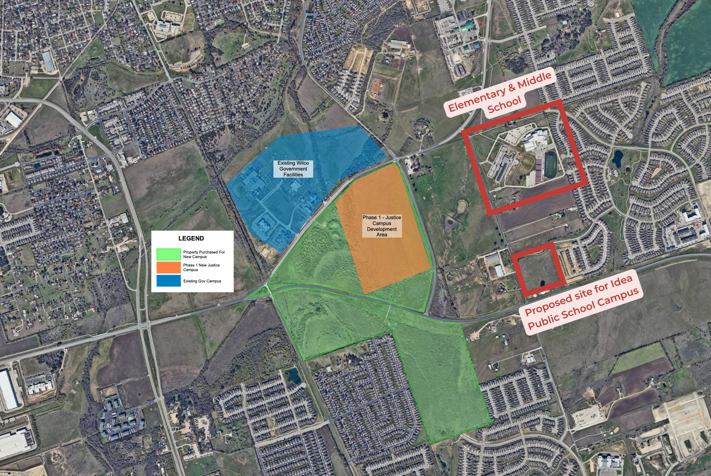

County jails process same-day bookings and release people around the clock. Williamson County unanimously paid $75.8 million for a site that puts that daily release population next to two campuses serving nearly 1,700 students, on a corridor with limited walkable services and no fixed transit.
The CR 110 site sits inside Georgetown city limits, which means any development requires a zoning change. As of today, no Justice Complex zoning application has been filed with the city. When one is, it travels through the Planning & Zoning Commission and then to City Council, with public hearings at each stop where residents have legal standing to speak.
Subscribe below to be notified the moment a related agenda item is posted. That is when showing up matters most.
Get notified when it's posted →Today, commissioners heard over an hour of testimony from real residents, rooted in facts, lived experiences, and realistic questions. They acknowledged our concerns. Then voted 4–0 anyway.
The next stop is Georgetown City Council, and we already have a seat at the table with Council Member Ben Stewart. He's engaged, he's listening, and he's committed to making sure this community has a voice in what comes next.
He hosted a community meeting at Carver Elementary on May 21 where neighbors gathered to organize for the zoning fight ahead. Event page on Facebook →
Zoning approval has to go through City Council, and that's where this campaign goes from here.
If you haven't already, sign up for email updates. That's where you'll hear first about next steps, meeting dates, and how to show up when it counts.
We're still waiting on the transcript from today's hearing. There's testimony after testimony on the record worth sharing, and we'll have more to say once it's in hand.
The commissioners had their minds made up before they walked in the room today. That much was clear.
Stay with us. We're not done.
Two campuses. Nearly 1,700 students. A jail facility with a daily release population. A corridor with limited walkable services and no fixed transit. Every claim below is sourced from official county documents, local news coverage, or statements from public officials.
George Wagner Middle School (969 students) and Mitchell Elementary (719 students) are both approximately a third of a mile from the proposed site at 1200 CR 110. Together, nearly 1,700 students attend these two campuses — an 8 to 10 minute walk from the facility entrance. A proposed IDEA Public School campus, shown on county planning maps in the same corridor, is also about a third of a mile away.

County jails hold individuals awaiting trial and process same-day bookings. Unlike state prisons, they have a daily release cadence. People leave at all hours. The operational reality of a county jail is fundamentally different from a state correctional facility.
Georgetown City Manager David Morgan and Police Chief Cory Tchida have publicly described inmate release at the current downtown jail as a documented issue. Morgan called it a "dynamic" affecting the surrounding area. Tchida called the cycle of arrest, jail, and release a "vicious cycle." The CR 110 corridor offers limited walkable services and no fixed transit. Moving the facility next to two schools relocates a dynamic the city has already acknowledged, rather than resolving it.
When Williamson County moves the jail next to Wagner Middle School and Mitchell Elementary, it is not theoretical that inmate release will create challenges. Two senior Georgetown officials have already said it does.
At the March 12, 2026 State of the City address, Georgetown City Manager David Morgan acknowledged what the current jail location creates downtown:
"Just think about it, everyone arrested in Williamson County is released in our downtown. I'm not saying all of them are homeless or experiencing homelessness, I'm not suggesting that. It just creates a dynamic."David Morgan — Georgetown City Manager
Georgetown Police Chief Cory Tchida went further, describing the cycle of arrest, jail, and release as a "vicious cycle" — someone gets booked, held, and then released back onto the street still facing the same circumstances that led to the arrest.
Both statements are reported in a Community Impact article published April 23, 2026.
In the same article, Morgan said relocating the jail will "help alleviate the number of unhoused individuals" downtown.
That is honest. It is also exactly the issue.
The county is taking a documented dynamic, one that the City Manager and the Police Chief both publicly acknowledge, and relocating it to a corridor with limited walkable services, no fixed transit, no shelter capacity, and two schools serving roughly 1,700 children within walking distance.
The jail capacity is not staying the same either. Williamson County has confirmed an ultimate build-out of 3,000 to 3,500 beds. Whatever release dynamic exists today at a smaller downtown facility will scale up at the new location.
Moving a problem is not solving it. And when the new address sits a third of a mile from a middle school and under half a mile from an elementary school, the people most affected by that decision are the ones with the least say in it.
Yes, Williamson County's jail must be inside Georgetown city limits or its ETJ because Georgetown is the county seat. That requirement does not point to CR 110. The county's own consultant identified ten sites that met its criteria. They picked this one.
Source: Community Impact, April 23, 2026 →A chronology of every public touchpoint — and every closed-door step — leading up to the May 19, 2026 financing vote on a 255-acre jail site a third of a mile from two schools in Georgetown's District 7.
The county's project manager evaluates 35–37 candidate sites and narrows to a short list of approximately 10 that "meet the criteria." The list, the scoring methodology, and the criteria themselves are not released to the public.
Commissioners deadlock 2–2 on entering due diligence for a rural 481-acre tract near Highway 195 priced around $7 million — one of the qualifying sites. The motion dies. No replacement direction is given publicly.
Source: Community Impact, July 15, 2025
The county holds one public information session. No specific site is named. The CR 110 parcels are not disclosed. It is the only in-person engagement opportunity residents will get before a 5–0 land-purchase vote.
A second public information session is quietly postponed via a county CivicAlert. No replacement date is announced. The next session the public learns about is not posted until after the land vote.
A purchase contract for the four CR 110 parcels (~255 acres) is signed at $75,819,874. The named buyer on the contract is the county's paid real estate consultant, Scott Stribling, who will later assign the contract to the county. No press release. No agenda. No notice to neighbors.
A closed executive session is convened the day after the contract is signed. The public is not told what is being discussed. There is no public deliberation on the record before the vote that follows.
The agenda item reads only: "Assignment of Commercial Contract — Unimproved Property." No price. No jail. No mention of the schools. A resident in the room has to ask out loud what is being purchased. The response: "We'll talk about it when we get to that item." The vote passes 5–0.
A county press release the next morning details the price, address, parcel numbers, and Justice Complex purpose. All of that information existed the day before. None of it appeared on the agenda the public was supposed to read.
The next CivicAlert sets a public information session for April 21, 2026 — the day after the cloaked land vote. The first meaningful chance for residents to weigh in is now scheduled for nearly a month after the contract was approved.
The public information session is held 28 days after the land was bought. By this point the option period is already a third gone. Affected neighborhoods — Carlson Place, Saddle Creek, Pinnacle, Churchill Farms, Summercrest, University Park — learn the scale of the project for the first time.
A formal letter to County Judge Snell and County Attorney Hobbs asserts the March 24 vote violated the Texas Open Meetings Act and warns that the defect gives the Attorney General grounds to refuse approval of any public securities issued to finance the purchase. The county can't build a jail without financing it.
Source: Aleshire letter (PDF)
More than 30 neighbors pack Commissioners Court. Eleven speak against the site on the record; one speaks in favor. The financing vote is pulled from the agenda. Commissioner Boles and Judge Snell both say publicly the conversation with neighborhoods is not finished.
Commissioners Court voted 4–0 to proceed with the CR 110 site — ratifying the March 24 land vote via Item 44 and approving the related financing under Item 45. The financing was recharacterized from $135M certificates of obligation to $150M limited tax notes — a Chapter 1431 instrument that bypasses the public-notice and petition rights of Chapter 1271. The land deal is done. But the project is not: the site is inside Georgetown city limits and requires a zoning change from Georgetown City Council.
From the start of Kitchell's site search to the May 19 financing vote, residents of Georgetown's District 7 had exactly one in-person opportunity to ask questions about the Justice Complex before the county committed $75.8 million to a 255-acre site a third of a mile from two schools.
Every binding step happened on an agenda that did not name the project. Every meaningful chance to comment came after the decision was already made. That is not how a generational public-safety decision is supposed to be made.
Williamson County paid 8.3 times what the appraisal district says these four parcels are worth. They paid more than ten times what a 481-acre rural alternative would have cost. They picked the most expensive option Kitchell put in front of them — and put it next to two schools.
Williamson County paid $75,819,874 for four parcels the Williamson Central Appraisal District values at $9,160,289 combined. That is a $66.66 million premium over appraised value — roughly 8.3 times the WCAD valuation.
The four parcels are R038820 (1200 CR 110, $4,908,531), R519352 (CR 110, $48,588), R432645 (3011 Maple St, $426,301), and R519356 (2180 Sam Houston Ave, $3,776,869).
All four parcels carry active agricultural exemptions, which can hold appraised values below open-market sale prices. WCAD market value is not identical to fair-market sale value. But an 8x gap warrants scrutiny — particularly when commissioners declined to even investigate a 481-acre rural alternative priced at approximately $7 million eight months earlier.
Source: Williamson Central Appraisal District (search.wcad.org) →Kitchell, the county's project manager, evaluated 35-37 candidate sites and identified 10 that met the county's criteria. In July 2025, commissioners split 2-2 on entering a contract to begin due diligence on a Florence property near Highway 195 in the Georgetown ETJ — 481 acres priced at approximately $7 million, one of those 10 qualifying sites. The motion failed. Eight months later, commissioners unanimously approved a contract to purchase 253 acres on CR 110 for $75,819,874. That is a $68 million difference in land cost, for less acreage, placed next to two schools.
To be precise: the July vote was specifically against entering a contract to begin due diligence on the Florence site — not a vote against the location itself. Commissioners disagreed on whether a contract was needed before doing site evaluation.
Source: Community Impact, July 2025 →KVUE Austin covered community pushback on the proposed Williamson County Justice Complex site — including concerns about school proximity and the site selection process.
Source: KVUE Austin — Georgetown residents push back on proposed Williamson County Justice Center
Note: KVUE's report referenced a distance of approximately one mile. Based on map measurement, both George Wagner Middle School and Mitchell Elementary are approximately a third of a mile from the site entrance.
Williamson County needs a modern jail. The current downtown facility is outdated. This is not a campaign against the project itself.
What we're asking is why commissioners unanimously approved a site next to two schools and residential neighborhoods, when there is so much open land available in the county. And what the county's plan is for daily inmate releases into neighborhoods with limited services, no fixed transit, and students walking by.
"County convenience shouldn't take precedence over resident safety. There is plenty of open land in Williamson County that meets every criteria without being next to schools."Georgetown resident and concerned parent
On May 19, 2026, Williamson County Commissioners voted 4–0 to proceed with the CR 110 site. The land deal is done. But the project is not.
The site is inside Georgetown city limits, which means any development requires a zoning change from Georgetown City Council. Council has not yet seen this request. Now is the moment to make sure every council member knows what is heading their way — long before the staff report and the public hearing.
Email your council member. Share this page with your neighbors. Subscribe so you know the moment a zoning case is filed.
On May 19, 2026, Commissioners Court voted 4–0 to proceed with the CR 110 site. The CR 110 site is inside Georgetown city limits. Any development requires a zoning change approved by Georgetown City Council. That is the next front, and it is where your voice carries the most weight right now.
The most useful thing you can do right now: email City Council and the Mayor so they know what is heading their way before the zoning request lands. Council Member Ben Stewart is already engaged on this. The rest of council and the mayor should hear from constituents now, not for the first time at a public hearing.
Written emails go on the record and carry more weight than phone calls. Keep yours short, factual, and polite. Use your own words.
The proposed site sits in District 1, less than a mile from neighborhoods across Districts 1, 6, and 7. Council members and the Mayor will weigh in on the zoning change required for any development at this location.
A few sentences in your own words carries more weight than anything copied and pasted.
Our city councilor told us form letters are usually ignored. A short, personal email in your own words carries far more weight than anything copied and pasted. It does not need to be long. A few sentences is enough.
Pick the points that matter most to you and write a brief email. Be polite. Be specific. Sign your name and include your address so they know you are a constituent.
End with a clear, courteous ask. A few examples:
Thank them for their time and service.
Because the CR 110 site is inside Georgetown city limits, any development will require a zoning change. That request will travel through the city's Planning & Zoning Commission and then to City Council, with public hearings at each stop. Both are public meetings. Both take citizen comment on the record.
Agendas and the sign-up process for public comment are posted on the city's site. When a Justice Complex zoning item is listed, that is the moment to be in the room.